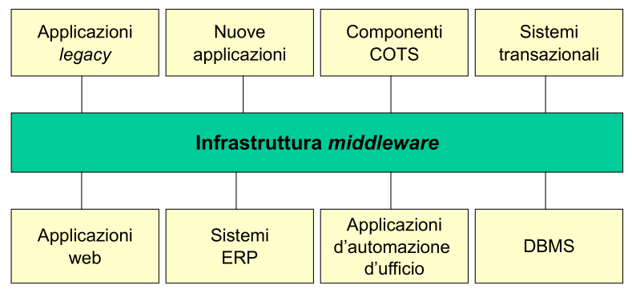
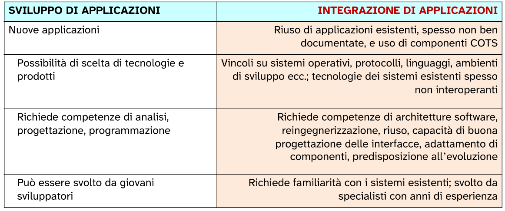
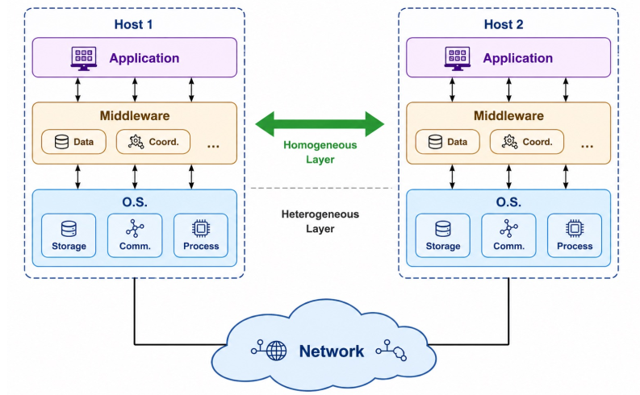
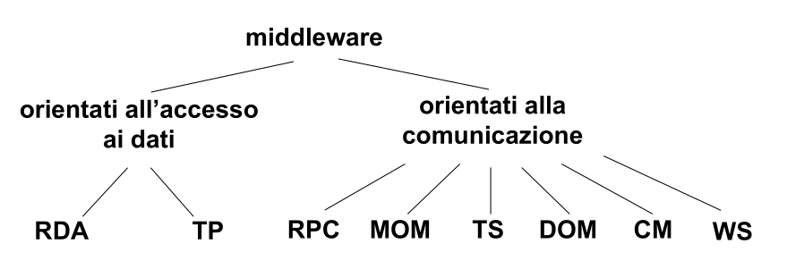

Sistemi Middleware
Cos’è un middleware
Il middleware è uno strato software interposto tra il sistema operativo e le applicazioni capace di fornire astrazioni e servizi utili per lo sviluppo di applicazioni distribuite. In altre parole, si posiziona “nel mezzo” tra l’hardware/OS e il software applicativo, e il suo scopo principale è mascherare la complessità e l’eterogeneità dei sistemi distribuiti.
Per questo motivo viene chiamato anche “glue technology” (tecnologia collante), perché permette a componenti sviluppati in momenti diversi, con linguaggi diversi e su piattaforme diverse, di comunicare tra loro.
Sistema distribuito
Alcune definizioni da i pionieri dei sistemi distribuiti sono:
-
“Un sistema distribuito è un sistema i cui componenti, localizzati in computer connessi in rete, comunicano e coordinano le loro azioni solo attraverso scambio di messaggi” - G. Coulouris et al.
-
“Il mio programma gira su un sistema distribuito quando non funziona per colpa di una macchina di cui non ho mai sentito parlare” - L. Lamport
Sono presenti delle implicazioni (conseguenze dirette) da tenere in considerazione che rendono i sistemi distribuiti intrinsecamente complessi rispetto a quelli centralizzati:
-
Elaborazione concorrente:
Nei sistemi distribuiti più componenti su macchine diverse eseguono operazioni contemporaneamente. Questo significa che non c’è un unico flusso di esecuzione sequenziale, ma tanti flussi paralleli che devono coordinarsi.
I problemi che ne derivano sono molteplici:
-
gestione della concorrenza nell’accesso alle risorse condivise (come i database)
-
necessità di meccanismi di sincronizzazione tra processi remoti
-
rischio di situazioni di stallo (deadlock) distribuite, molto più difficili da rilevare e risolvere rispetto al caso locale
In middleware cerca di alleviare questo problema fornendo primitive di coordinamento ad alto livello, come le transazioni distribuite.
-
-
Assenza di clock globale:
In un sistema centralizzato esiste un unico orologio di sistema che permette di stabilire con precisione l’ordine temporale degli eventi. In un sistema distribuito, ogni macchina ha il proprio orologio locale, e questi orologi non sono mai perfettamente sincronizzati tra loro, per via dei ritardi di rete e della deriva degli orologi fisici.
Questo crea un problema fondamentale: è impossibile dire con certezza assoluta quale evento tra due eventi avvenuti su macchine diverse si è verificato per primo.
-
Malfunzionamenti indipendenti:
In un sistema centralizzato il guasto è generalmente totale: il sistema funziona o non funziona. In un sistema distribuito invece i guasti sono parziali e indipendenti. Un singolo nodo può crashare, un link di rete può interrompersi, un messaggio può andare perso, tutto questo mentre il resto del sistema continua a funzionare.
Questo crea scenari molto insidiosi: messaggio potrebbe essere stato ricevuto o meno prima del chash del destinatario, e un’operazione potrebbe essere stata eseguita parzialmente.
I middleware nascono proprio per nascondere queste complessità, permettendo di ragionare sul sistema distribuito in modo simile a come ragioneremmo su un sistema centralizzato.
Heterogeneous distributed computing
I sistemi distribuiti sono in generale eterogenei.
L’eterogeneità dei computer e delle tecnologie - hardware e software - è da considerarsi la norma, non l’eccezione, anche all’interno di una stessa grande azienda od organizzazione, pubblica o privata.
Per eterogeneità intendiamo la natura dei sistemi che riguarda tutto lo stack hardware-software.
Il paradigma di elaborazione più generale prevede componenti interoperanti in ambiente distribuito eterogeneo. Questo paradigma (modello di riferimento) e chiamato Heterogeneous distributed computing.
Eterogeneità
In ambiente distribuito vari fattori aumentano la complessità dello sviluppo di software di qualità:
-
le applicazioni sono distribuite su una rete di calcolatori, di caratteristiche differenti (mainframes, servers, workstations, personal computers) e dotati di hardware e di sistemi operativi diversi e spesso incompatibili.
-
occorre adoperare linguaggi di programmazione diversi:
- linguaggio di alto livello, come
C#oJava, per lo sviluppo rapido della parte di presentazione di un’applicazione (la cosidetta presentation logic) e per le funzionalità di un’applicazione (business logic). - linguaggi tradizionali come
COBOL,C,C++per funzionalità legacy o di basso livello (che richiedono maggior interazione con il OS). - linguaggi di scripting, come
python,php,jsp,asp.net, per lo sviluppo di funzionalità server-side.
- linguaggio di alto livello, come
-
i dati sono distribuiti su più nodi di elaborazione, memorizzati in archivi o con sistemi di gestione di basi di dati (DBMS) diversi, e in generale condivisi da applicazioni locali e remote.
-
nello sviluppo di sfotware su rete - anche in ambiente omogeneo - occorre fronteggiare problematiche di:
- sicurezza,
- guasti,
- contesa e condivisione di risorse,
che si presentano ben più complessi che per i sistemi centralizzati; l’eterogeneità aggiunge ulteriore complessità a questi stessi problemi.
Enterprise Application Integration (EAI)
Sistemi complessi funzionanti raramente vengono sviluppati integralmente ex novo.
- Tipicamente essi evolvono a partire da sistemi esistenti già funzionanti.
L’integrazione di sistemi informativi sviluppati in momenti, con linguaggi e con tecniche diversi, ed operanti su piattaforme eterogenee, è un problema centrale delle tecnologie software.
L’integrazione consiste nel far comunicare e collaborare sistemi informativi che sono stati sviluppati in momenti diversi, con linguaggi diversi, con tecniche diverse, e che operano su piattaforme eterogenee.
In pratica si richiede sempre più di fare due cose. La prima è utilizzare applicazioni di terze parti, chiamate sistemi COTS che stanno per Commercial Off-The-Shelf, ovvero software commerciale già pronto che si comporta e si integra nel proprio sistema, come ad esempio un sistema ERP o un software di gestione delle risorse umane.
La seconda è riutilizzare applicazioni esistenti chiamate sistemi legacy, ovvero quei vecchi sistemi ereditati dal passato che continuano a funzionare e che nessuno vuole o può riscrivere da zero.
L’integrazione di applicazioni, siano esse sistemi di nuovo sviluppo, sistemi ereditati o sistemi COTS, è da considerarsi lo scenario tipico di sviluppo software su larga scala.

Per far comunicare quindi tutti questi sistemi eterogenei di una applicazione distribuita è indispensabile l’utilizzo di un middleware.
L’integrazione di applicazioni (EAI) è un processo sovente più complesso dello sviluppo ex novo

È un risultato controintuitivo: integrare è spesso più difficile che sviluppare da zero.
Quando si sviluppa da zero si ha la libertà di scegliere le tecnologie e i prodotti più adatti, si richiede competenze classiche di analisi, progettazione e programmazione, e il lavoro può essere svolto anche da giovani sviluppatori.
Quando invece si integra, si hanno vincoli pesanti su sistemi operativi, protocolli, linguaggi e ambienti di sviluppo, perché bisogna fare i conti con quello che già esiste. Si richiedono competenze molto più specializzate come la conoscenza delle architetture software, la capacità di reingegnerizzare sistemi esistenti, la progettazione attenta delle interfacce tra componenti e la predisposizione all’evoluzione futura. Infine richiede familiarità con i sistemi esistenti e viene svolto da specialisti con anni di esperienza, non da sviluppatori junior.
In questa prospettiva dello sviluppo software, la programmazione (intesa come codifica di moduli software in un linguaggio di programmazione) è sempre meno una fase critica del ciclo di vita del software, in termini sia di risorse sia di competenze tecnologiche richieste.
Poiché nell’EAI il problema principale non è scrivere codice nuovo, ma far comunicare sistemi che già esistono. Questo sposta il peso del lavoro dalla fase di programmazione ad altre fasi.
Quindi assume maggiore importanza la capacità di adattare componenti esistenti e non originariamente pensati per interoperare, mediante l’attenta progettazione delle interfacce.
Le tecnologie middleware sono nate con il preciso obiettivo di fornire una risposta al problema dell’EAI.
Middleware
Con il termine middleware si intende uno strato software interposto tra il sistema operativo e le applicazioni, in grado di fornire le astrazioni ed i servizi per lo sviluppo di applicazioni distribuite.

- Quando due componenti di un sistema distribuito devono comunicare tra loro, ci sono tre cose su cui devono necessariamente accordarsi in anticipo, altrimenti la comunicazione non può funzionare:
-
Servizio e interfacce:
Prima che i due componenti possano comunicare, devono sapere cosa offre l’uno all’altro e come chiederlo. È come un contratto: il componente che offre un servizio deve dichiarare cosa sa fare e come lo si può invocare.
Si parla di IDL (Inteface Definition Language).
-
Posizione:
Un componente deve sapere dove si trova fisicamente il componente con cui vuole comunicare nella rete.
-
Rappresentazione dei dati:
Quando due macchine diverse si scambiano dati, devono parlare lo stesso “linguaggio” per i dati.
-
Lo strato middleware offre ai programmatori di applicazioni distribuite librerie di funzioni, o middleware API (Application Programming Interface), in grado di mascherare l’eterogeneità dei sistemi su rete.
Le piattaforme middleware vengono anche definite software di connettività tra applicazioni, o anche “glue technologies”, evidenziando la loro caratteristica di tecnologie di integrazione di applicazioni.
Proprietà del livello middleware
Un middleware può mascherare le eterogeneità mediante meccanismi di:
-
Trasparenza del sistema operativo:
Operando al di sopra del sistema operativo, i servizi forniti dalle API middleware possono essere definiti in maniera indipendente da esso, consentendo la portabilità delle applicazioni tra diversi OS.
-
Trasparenza del linguaggio di programmazione:
La comunicazione tra componenti sviluppati in linguaggi fa sorgere immediatamente due categorie di problematiche:
- Il primo problema riguarda le differenze tra i tipi di dato. Ogni linguaggio di programmazione ha il proprio sistema di tipi. Un intero in
Cnon è necessariamente uguale a un intero inJava; - il secondo problema riguarda la diversità nei meccanismi di scambio dei parametri. Quando un programma chiama una funzione o una procedura, i parametri vengono passati in modi diversi a seconda del linguaggio. Alcuni linguaggi passano i parametri per valore, altri per riferimento, altri ancora hanno convenzioni ibride.
Il livello middleware può consentire l’interoperabilità in due modi strettamente collegati:
- il primo modo è definire un sistema di tipi intermedio. Il middleware introduce un insieme di tipi di dato neutrali, indipendentemente da qualsiasi linguaggio specifico. Ogni linguaggio partecipante ha poi delle regole precise per tradurre i propri tipi nativi in questi tipi intermedi e viceversa;
- il secondo modo è definire regole non ambigue di corrispondenza con i tipi dei linguaggi più diffusi. Queste regole specificano esattamente come ogni tipo del sistema intermedio corrisponde ai tipi dei vari linguaggi supportati, eliminando qualsiasi ambiguità nella traduzione.
- Il primo problema riguarda le differenze tra i tipi di dato. Ogni linguaggio di programmazione ha il proprio sistema di tipi. Un intero in
-
Trasparenza alla locazione:
Le risorse (dati e servizi) dovrebbero essere accessibili a livello logico, senza conoscerne la effettiva locazione fisica. È lo strato middleware che deve farsi carico della localizzazione su rete del processo partner in una comunicazione, e del trasporto dei dati (location transparency)
-
Trasparenza della migrazione:
Dati e servizi possono venir rilocati durante il loro ciclo di vita. Se un componente migra, il middleware deve consentire l’accesso a componenti mobili sulla rete, in maniera trasparente ai moduli client (migration transparency)
Quindi il middleware deve poter gestire fallimenti nel mondo fisico e le eventuali migrazioni verso altri server.
-
Trasparenza ai guasti:
Una elaborazione distribuita può fallire anche solo in maniera parziale per guasti che si verificano nei singoli nodi o nel sottosistema di comunicazione.
Occorrono tecniche complesse per poter gestire uno stato globale consistente della computazione.
Lo stato globale consistente della computazione è l’insieme di tutte le informazioni che descrivono in un dato momento la situazione di tutti i componenti del sistema distribuito, quindi i dati presenti su ogni nodo, le operazioni in corso, i messaggi in transito nella rete. Si dice consistente quando questo stato è coerente e non contraddittorio, cioè quando tutti i componenti del sistema si trovano in una situazione che ha senso dal punto di vista logico.
Il problema è che non avendo un clock globale e i componenti sono indipendenti tra loro, quando si verifica il fallimento è molto difficile capire in quale stato si trovava ciascun componente in quell’istante.
Lo strato middleware può offrire al programmatore meccanismi ad alto livello per mascherare i guasti. Questo significa che il middleware si occupa di rilevare i guasti e di tentare il recupero quando possibile, in modo trasparente al programmatore, che non deve scrivere codice complesso per gestire ogni possibile scenario di guasto.
-
Trasparenza della resplicazione:
La replicazione di componenti è una delle tecniche più comuni per realizzare politiche di tolleranza ai guasti, ma può essere utilizzata anche per migliorare le prestazioni, attraverso un miglior bilanciamento del carico di elaborazione.
L’esistenza di più copie di un componente dovrebbe però essere trasparente ai suoi client (replication transparency).
-
Trasparenza delle implementazioni commerciali:
Alcune tecnologie di middleware non nascono come prodotti commerciali, ma come specifiche di riferimento, cioè documenti tecnici che descrivono come un certo tipo di middleware deve funzionare, quali servizi deve offrire e come deve comportarsi. Queste specifiche vengono promosse da organizzazioni di produttori, cioè gruppi di aziende che si mettono d’accordo su uno standard comune, e spesso vengono poi recepite dagli enti di standardizzazione ufficiali.
Una volta che esiste una specifica standard, le varie aziende possono sviluppare le proprie implementazioni commerciali di quel middleware, ognuna a modo suo, ma tutte rispettando lo stesso standard. Queste implementazioni quindi sono conformi allo standard ma possono differenziarsi tra loro per due motivi.
- il primo sono gli aspetti secondari, cioè dettagli implementativi che lo standard lascia liberi;
- il secondo sono i servizi aggiuntivi fuori standard, cioè funzionalità extra che una specifica implementazione offre oltre a quelle previste dallo standard.
In questo modo è resa possibile l’interoperabilità tra applicazioni basate su realizzazioni commerciali diverse dello stesso tipo di middleware, ovvero che seguono lo stesso standard di riferimento.
Modelli di tecnlogie middleware
Nell’ultimo decennio sono state realizzate numerose tipologie di piattaforme middleware, sia in forma commerciale sia in forma prototipale in ambito di ricerca.
Esistono diversi modelli di programmazione basati sui middleware, cioè diversi approcci con cui il middleware organizza e gestisce la comunicazione tra componenti in un sistema distribuito.
I principali modelli di programmazione sono:
- Chiamata di procedura remota (Remote Procedure Call, RCP)
- Scambio di messaggi (Message-Oriented Middleware, MOM)
- Transazionali (Transaction Processing, TP)
- Spazio delle tuple (Tuple Space, TS)
- Accesso remoto ai dati (Remote Data Access, RDA)
- Oggetti distribuiti (Distributed Object Middleware, DOM)
- Componenti (Component Model, CM)
- Servizi Web (Web Service, WS)
TASSONOMIA DEI SISTEMI MIDDLEWARE:
